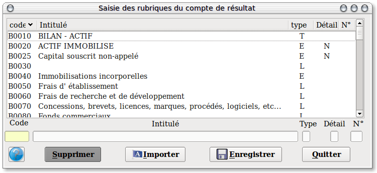

~ Comptabilité et Facturation Laurux ~

~ Comptabilité et Facturation Laurux ~ |
|
|
|

Saisir le code de la rubrique qui devra commencer par un "B" pour une rubrique Bilan ou par un "R" s'il
s'agit d'une rubrique comptes de résultat ou par un "S" pour le SIG.
Saisir l'intitulé.
Saisir le type."T" = Titre, "E" = Entete, L = Ligne, S = Sous-total, O = Total, C = Solde créditeur, D = Solde débiteur, R = Total créditeur, G = Total débiteur
Renseigner la zone détail avec un "N" si la rubrique n'est pas détaillée, sinon ne rien mettre.
Le bouton Importer sert a créer dans la table des rubriques et des comptes un paramétrage type à partir de deux fichiers texte inclus dans Laurux. Ces fichiers sont situés sous le répertoire Laurux3 et s'appellent Bcr.txt pour les rubriques et Bcrcpt.txt pour les comptes.
NB: Il est possible d'exporter ces données en allant dans Outils
==> Appel programme. Le programme d'export qui s'appelle Exprub va
générer les deux fichiers texte évoqués plus haut.
Enregistrer pour chaque création ou modification.
----------------------------------------------------------------------------------------------------------------------